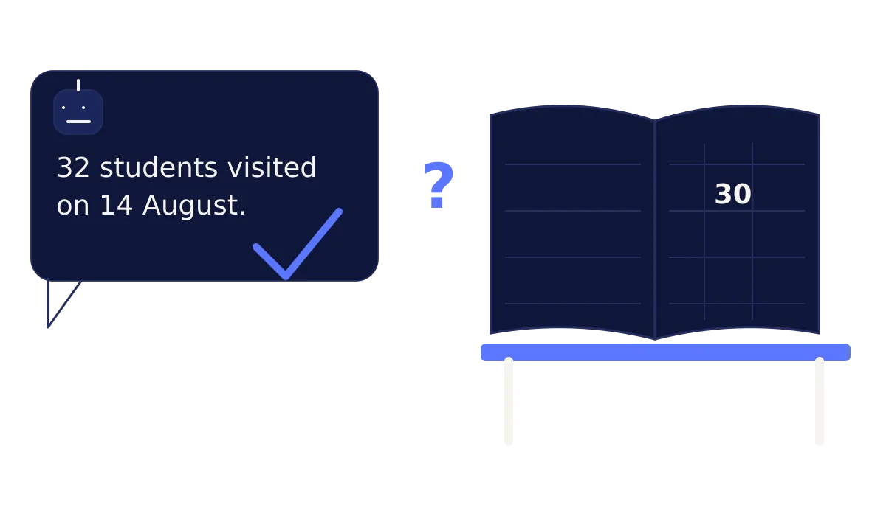

Reading · 0.75 hours
Marking, Separating and Correcting
Learn how to check an AI answer before you use it, even when it sounds very sure.

Start
Do three things before you use an AI answer.
AI tools sound sure, even when they are wrong. A sure tone tells you nothing about the facts.
Your task. Put the three steps in the right order.
- Mark the parts you can check.
- Separate what is supported from what is not.
- Correct or qualify what does not hold up.
Step 1
Step 1 is to mark the parts you can check.
Some parts of an AI answer can be right or wrong. Mark these five kinds every time.
Your task. Tap each card to see what it means.
Step 1 · Example
Here is one AI sentence with its parts marked.
Your task. Tap each coloured phrase to see what kind of part it is.
Step 2
Step 2 is to sort each part into one of three groups.
Supported means a record you can check agrees. Uncertain means it may be true, but nothing confirms it. Unsupported means a record disagrees, or there is no source.
Your task. Use the visit register to sort each part of the Step 1 sentence.
Supported
Uncertain
Unsupported
Step 3
Step 3 is to correct or qualify each problem.
Each uncertain or unsupported part needs one of four actions.
Your task. Tap each card to see the action.
Step 3 · Before and after
This is the sentence after the check.
Your task. Compare the two versions, then answer the question.
Only add details from your own record. Never type passwords, Aadhaar numbers, phone numbers, addresses, health details, marks or employer secrets.
On 14 August, 32 students from Batch 4B visited the facility, which exports components to five countries, as noted in the visit register.
On 14 August, 30 students from Batch 4B visited the facility, as noted in the visit register. (The trainer mentioned the unit also exports components, but this is not confirmed in the register.)
What changed in the corrected sentence?
Worked example · 1 of 2
The same method works for an ITI visit note.
ITI · Industrial visitAn AI tool wrote a note about a plant visit. The training officer keeps the register with the real numbers.
Your task. Read both versions, then answer the question.
On 14 August, 32 students from Batch 4B visited the facility, which exports components to five countries, as noted in the visit register.
On 14 August, 30 students from Batch 4B visited the facility, as noted in the visit register. Nobody could check the export claim, so it was removed.
Why did 32 students become 30 students?
Worked example · 2 of 2
The same method works for a campus event report.
Higher ed · Campus event reportAn AI tool summarised a workshop for a campus notice. Someone checked the event register before it was published.
Your task. Read both versions, then answer the question.
The workshop on 3 March was the first of its kind in the state and drew 150 participants, according to the event register.
The workshop on 3 March drew about 140 participants, according to the event register. Nobody could confirm that it was the first of its kind, so that claim was removed.
Why was "the first of its kind in the state" removed?
Try this · 1 of 4
Now you tag the phrase yourself.
An AI tool wrote this note about a practical session. The record book is the only record you can trust.
Your task. Use the record book to choose a tag for the bold phrase.
"The record book shows the session shifted to 9 October."
Choose a tag first.
Try this · 2 of 4
Now you tag the next phrase.
Your task. Use the record book to choose a tag for the bold phrase.
"...and all 28 trainees from Batch 2 completed it."
Choose a tag first.
Try this · 3 of 4
Now you tag the next phrase.
Your task. Use the record book to choose a tag for the bold phrase.
"...making this the best-attended session this term."
Choose a tag first.
Try this · 4 of 4
Now you tag the next phrase.
Your task. Use the record book to choose a tag for the bold phrase.
The whole sentence: "The record book shows the session shifted to 9 October, and all 28 trainees from Batch 2 completed it, making this the best-attended session this term."
Tag "the record book" as the source for the whole sentence.
Choose a tag first.
Check before you use
Remember these five lines.
Your task. Read the five lines, then answer one last question.
- 1A sure tone is not proof.
- 2Mark every fact, figure, date, name and source.
- 3Separate each mark into supported, uncertain or unsupported.
- 4Correct each problem. Verify, replace, qualify or remove it.
- 5Pause before send. Send only what you can defend.
An AI answer gives a number with no source. What do you do?
Check before you use
Here is the whole method on one card.
On every AI task, run Mark, Separate, Correct and Pause before send.
Try it now. Before you use your next AI answer, run this routine on it.